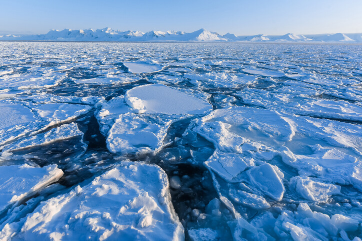
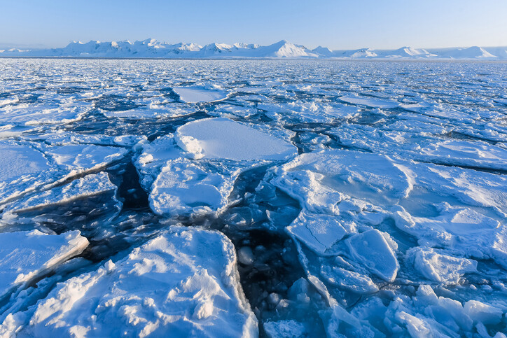
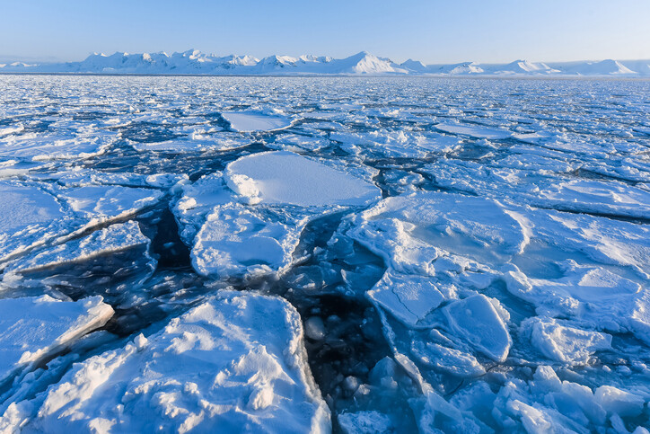
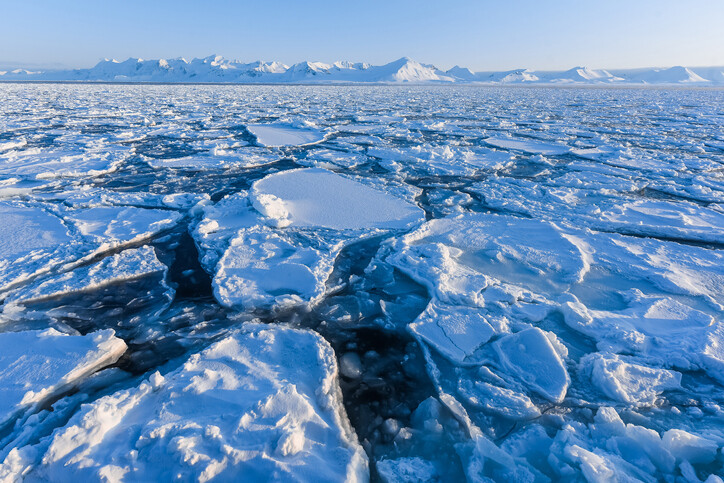

북극은 지구에서 가장 민감한 생태계 중 하나로, 기후 변화의 최전선에 놓여 있습니다.
급격히 녹아내리는 빙하, 극단적으로 변하는 온도,
그리고 서식지를 잃어가는 동식물들은 북극이 직면한 위기의 단면일 뿐입니다.
이러한 변화는 북극만의 문제가 아니라, 해수면 상승과 극단적 기후를 통해 전 세계에 영향을 미치고 있습니다.
하지만 북극의 미래는 아직 정해지지 않았습니다.
국제적인 협력과 기술 혁신, 그리고 개인의 작은 실천이 모이면
얼어붙은 땅을 다시 되살릴 수 있는 가능성도 있습니다.
우리는 지금 행동해야 할 중요한 전환점에 서 있습니다.
북극의 미래를 지키는 것은 곧 인류의 미래를 지키는 일입니다.